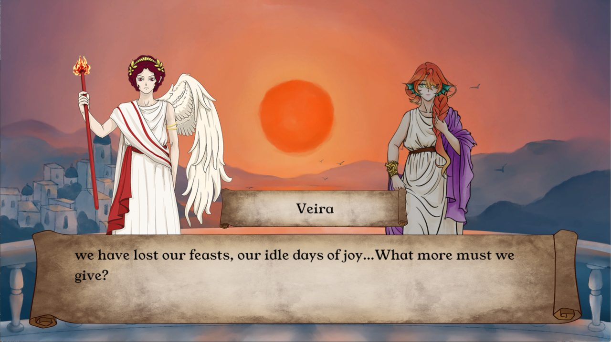

叙事高级课程项目
孤岛将沉，王后要在爱与牺牲之间做出选择。

下载试玩多结局可玩原型
百度网盘下载（提取码 qud5）孤岛城邦 Veiko 即将被上涨的海水吞没。国王 Auriona 听信神谕：以献祭唤醒沉睡的岛屿，岛就能化作巨鸟飞向天空。玩家扮演王后 Veira：她是王国的首席工匠，理性，不信神明，深爱国王，一直忠心服从，直到祭坛的建造在民间引发动荡。玩家奉命完成祭坛的最后工程，通过对话和选择推进剧情，在爱与牺牲之间抉择，走向不同的结局。
主题：灾难面前的选择、生存与牺牲、爱与背叛，以及对环境的关注。
世界观：爱琴海风格的孤岛城邦，居民带有海洋生物的特征；岛屿其实是一头沉睡的巨鲸，取自中国神话中的「鲲化为鹏」，故事整体还借鉴了「尾生抱柱」的寓言。
（待补充：叙事和玩法如何结合）
点开每条记录，查看当时的问题、思考和决定。（部分日期待补充）